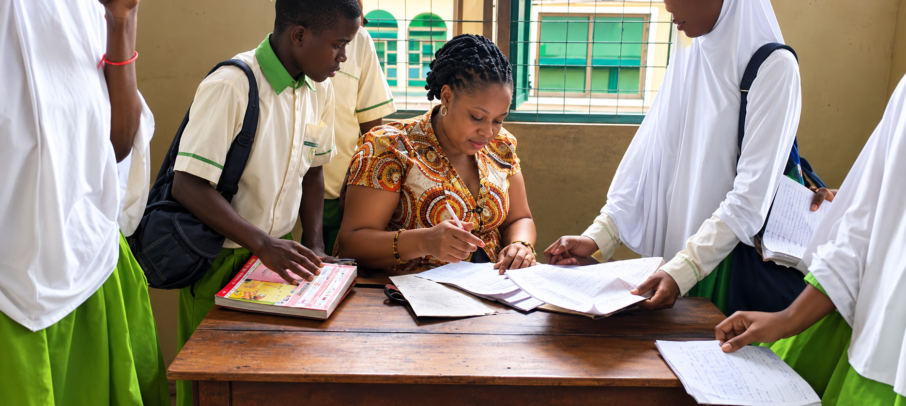
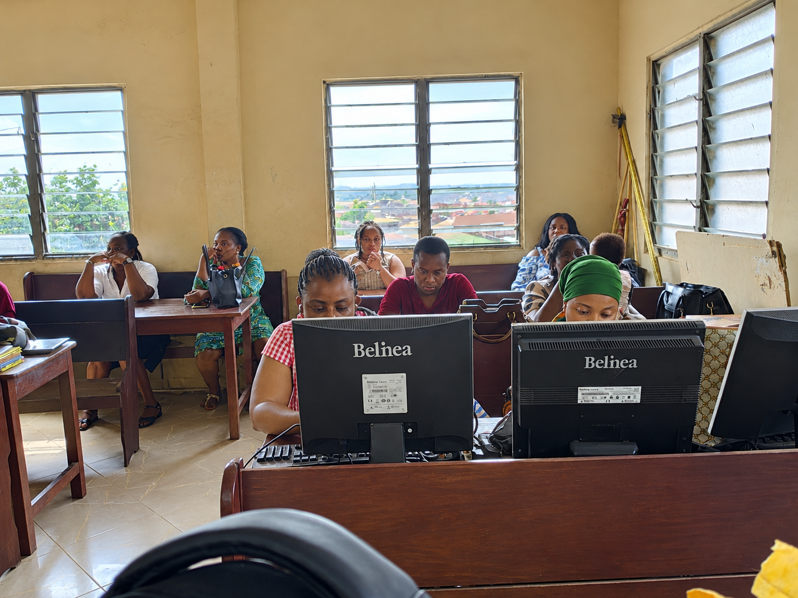

Education & Training
Digital literacy, lesson preparation, instructional resources, and explaining technical concepts clearly.
OPEN TO OPPORTUNITIES
Educator · Researcher
I enjoy helping people understand social and moral life.
A LITTLE ABOUT ME
As an aspiring Social Studies educator, my teaching philosophy is rooted in progressivism and learner-centered pedagogy.
I value curiosity, clear communication, continuous learning, and solving social and moral problems. Get to know a growing collection of my work, learning, and experience.
Let's connectWHAT I WORK WITH
Digital literacy, lesson preparation, instructional resources, and explaining technical concepts clearly.
Macro-teaching simulations
Breaking a problem into manageable steps, documenting solutions, and improving through testing.
SELECTED WORK

TEACHING EXPERIENCE
Supporting learners through classroom interaction, reviewing written work, and providing guidance to help them improve their understanding and learning outcomes.

ICT EDUCATION
Supporting digital learning through practical computer activities, learner guidance, and the use of technology in education.
DOCUMENT LIBRARY
A collection of academic reports, assignments, lesson-related work, and presentations.
MOMENTS THAT MATTER
Explore classroom experiences, school activities, Ghanaian culture, and memorable learning moments. Select any photograph to view it larger.
WATCH & EXPERIENCE
MY BACKGROUND
PRESENT
Eden Academy
Social Studies.
2023 - PRESENT
University of Ghana
B.Ed. Junior High School specialism, majoring in Social Studies.
2010 – 2014
Anglican Senior High School, Kumasi
LET'S TALK
I'd be happy to connect about education and suitable professional opportunities.